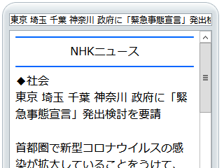
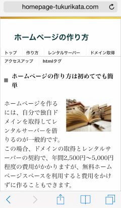

携帯サイトの作り方（ガラケーサイト）
ガラケーはフィーチャーフォン端末とも呼ばれていますが、スマートフォン（スマホ）に対して単に携帯とも呼ばれています。このガラケー用の携帯サイトを作成する際は独特な作り方になるため、スマホサイトと比較すると困難な点が多いです。
また、このフィーチャーフォン携帯は2017年に生産が終了されており、大手サイト運営側も2014年には「Yahoo!メール」のガラケー版が終了、2016年には「ヤフオク！」や「Youtube」などが相次いでガラケー対応を終了しています。
NHKなどの公共性のあるサイトはいまだに健在ですが、令和の時代に入り、携帯サイトを見かけることはほとんどありません。

加えて、2016年12月にはGoogle公式ブログで「フィーチャーフォン用 Googlebot の廃止」が発表されていますので、今後はガラケー用のサイトを作ってもクロールやインデックス自体がされないものと思われます。
「handheld」リンクを使用することで、ガラケーサイト用ページが存在することは確認されますが、ガラケーサイトを作成する意味はなくなってきているものと思われます。
以下の内容はまだスマホがあまり普及しておらず、ガラケーが主流だった「2009年頃」の情報になりますので、今後はレスポンシブ・ウェブデザインでスマートフォン向けのサイトを作成することをおすすめします。
さらに、最近のモバイル端末対応はAMPページの作成が主流になってきていますので、別途に携帯サイト用のページを作成するのでしたら、AMPページの作成を優先した方がメリットが多いと思います。
スマホサイトとガラケー携帯サイトの違い
この“ガラケー”の意味についてですが、外部から孤立して独自に進化したガラパゴス諸島の生き物のように、i-modeなどが日本で独自に発展してきたため、世界標準ではないことからガラパゴス携帯（ガラケー）と呼ばれています。
また、スマホとガラケーでは以下のような違いがあります。
- スマホサイト → フルブラウザ → 基本的にはPCサイトと同じ
- ガラケーサイト → フルブラウザではない → 独自のHTMLファイルとCSSが必要
■スマートフォン用サイト
スマートフォンの場合は「フルブラウザ」のため、基本的にはPC用のサイトでもそのまま閲覧できます。ただし、デフォルトの状態では文字が小さく表示されるため、レスポンシブウェブデザインでCSSのみを変更することで対応できます。
→ レスポンシブサイトの作り方
（当サイトでの例：）

■AMP対応・スマートフォン用サイト
また、最近ではモバイル端末での表示が高速化されるAMPページに対応するサイトも多くなってきました。AMPページの場合、ガラケー携帯サイトと同様、別途に専用のHTMLファイルとCSSを用意する必要があります。
→ AMPページの作り方
例えば、このページをAMPに対応した場合、スマホで閲覧した際に上部にこのような表示がされて高速化されます。
（AMPページ対応の例：）
外部CSSが使えない点や別途にファイルを作成してURLを正規化する点など、携帯サイトとAMPページは似ている点も多いです。
■ガラケー用サイト（フィーチャーフォン端末）
一方、携帯サイトのブラウザは「フルブラウザではない」ため、ファイル容量などに制限があります。ガラケーサイトを作成する場合はPCサイト用のファイルをそのまま流用できませんので、HTMLファイルとCSSをPCサイトとは別に用意する必要があります。
（当サイトでの例：）

また、CSSファイルを用意するといっても、ガラケーの場合は外部スタイルシートには対応していない機種も多いため、HTMLファイル内で内部化したり、HTMLタグに直接指定するなどして対応する必要があります。
そのため、HTMLソースはstyleの指定などでごちゃごちゃした作り方になる傾向があります。
ガラケーサイト作成のポイント
携帯サイトを作成する際、以下のような点に注意して作成していくとよいでしょう。
■携帯サイト専用のフォルダを作成し、PCサイトと携帯サイトを切り分ける。
一般的には、ドメイン下にmobileの意味の「m」や「mb」、「i」などのフォルダを新たに作成し、ガラケーからのアクセスは www.example/m/ などへ転送するケースが多いです。あるいは、サブドメインを設定し、mobile.example.com などへ転送しているケースもあります。
■DTDは XHTML 1.0 Transitional でも特に問題ありません。
当サイトではPCサイトも携帯サイトもDTDは XHTML 1.0 Transitional で作成しています。あるいは「XHTML Mobile 1.0」などを指定しておきましょう。
■外部化したスタイルシートは使わない（htmlファイルに直接記述する）
div style=などを使用して、htmlタグにCSSを直接指定しましょう。
■ジャバスクリプトは使えない（通常のアクセス解析を使えない）
基本的に Javascript は使えませんので、一般的なアクセス解析は使えません。javascriptは使えないため、headタグ内でのjavascriptの指定もしなくてよいです。
■画像サイズを240px程度にする
ガラケーはスマホよりも画面サイズが小さい傾向にあります。当サイト運営者の場合、スマホサイトでは320px以内に指定しておりますが、ガラケーサイトの場合は240px以内にしております。
■リストタグは使わない
文下げされるため、リストタグのulなどは使わない方がよいでしょう。デザインが大幅に崩れるケースがあり、携帯サイトでは外部CSSが使えないため余白の調整が困難です。
■カタカナは半角にする（F8キーで変換）
容量削減という意味もありますが、カタカナを半角にすると携帯サイトと認識されやすいです。Dreamweaver を使用している場合、一括で変換できる拡張ツールなども公開されています。
■罫線や絵文字を使う（「けいせん」で変換）
罫線の（┏や┣）、あるいは絵文字をつかって見やすく整形しましょう。
■カラーコードは「3桁」ではなく、「6桁」で指定する
PCサイトではカラーコードを3桁で省略することも多いです。（例：#000000 → #000など。）
けれども、携帯サイトで3桁で記述するとうまく反映されないケースがあるため、省略せずに「6桁」で記述することをおすすめします。
■携帯サイトのフォントサイズについて
<div style="font-size:small;"></div>などと指定して全体を囲んでおくとよいです。大手ポータルなどでは、font-size:x-small;で小さ目の文字サイズに設定しているケースも多いです。
■文字コードはshift-jisを使う
PCサイトではUTF-8、携帯サイトではshift-jisを使うことをおすすめします。
■ファイル容量を100kb以内に収める
画像の容量などを削減し、100kb以内に収めないと表示されないケースがあります。
■.htaccessで携帯サイトへと振り分ける
携帯でPCサイト用のトップページへアクセスした際、携帯用サイトへ転送されるように設定します。
例えば、携帯用サイトを「m」のフォルダで作成していた場合、.htaccessに以下のように記述するとよいでしょう。
（※こちらは7年ほど前に設置したものですので、現在では古いかもしれません。）
例：）/m/フォルダへ転送する場合
■QRコードの設置
ホームページアドレスを画像のQRコードに変換し、PCサイト上に設定しておきましょう。当サイトのQRコードはこのような画像になりますが、ネット上で変換できるサイトが多数公開されています。
PCサイト用のURLをQRコードに変換するのか、それとも携帯サイト用の/m/フォルダ付きのURLを変換するのかについては、当サイトではPCサイト用のURLを変換しています。どのみち携帯からのアクセスは/m/フォルダへと振り分けられますので、正規のPCサイト用のURLを変換しておいた方がよい気がいたします。
実際のhtmlソースの例については、当サイトでも簡易的に携帯サイト用のページを作成しておりますので、そちらのソースなどを参考にしてみてください。こちらはPCブラウザでもアクセスできます。
https://www.homepage-tukurikata.com/m/
■サイトビューワでのチェック
また、携帯からアクセスした場合、どのように表示されるかをPCサイトからチェックするには、Gooモバイルのサイトビューワを利用するのがおすすめです。
「handheld」と「canonical」でPCサイトと連携する
PCサイト側には、携帯サイト用の代替URLを示す「handheld」を指定します。
一方、携帯サイトにはPCサイトのURLを「canonical」で指定して正規化します。PCサイト用のURLが正規のメインページ、携帯サイト用のページが代替ページの意味になります。
携帯サイトではファイル容量が制限されているため、PCサイトよりも内容を削って作成しているケースも多いです。この場合、内容が微妙に違っているため、それぞれ別々のページとして検索エンジンにインデックスされてしまう可能性があります。
このため、携帯サイトの方に canonical を指定し、PCサイト用のページを正規URLとして指定しておくとよいでしょう。
<link rel="canonical" href="http://ＰＣサイトのＵＲＬ" />
一方、PCサイト側には携帯ページのURLを示す handled を指定しておくことをおすすめします。
<link rel="alternate" media="handheld" href="http://携帯サイトのＵＲＬ" />
参考：）フィーチャーフォン - ウェブマスター向けモバイルガイド
ただし、この「handheld」はメディアクエリレベル4で非推奨となったため、文法チェックをした際にはエラーが出るかもしれません。
モバイル用の「mobile_sitemap.xml」の作成
PCサイト用の sitemap.xml とは別に、モバイルサイトのURLのみを記述した sitemap.xml も作成しておきましょう。
通常のサイトマップに、<mobile:mobile/>を追加して記述していきます。ファイル名は任意ですが、mobile_sitemap.xmlなどが分かりやすいと思います。
→ モバイル URL 情報をサイトマップに追加する
また、robots.txt にその場所を指定しておくことをおすすめします。
Sitemap: http://www.example.com/mobile_sitemap.xml
■追記：
最近はスマートフォンが主流になり、モバイル用クローラーの仕様も変更になったため、こちらの携帯用（ガラケー、フィーチャーフォン用）のモバイルサイトマップは意味がなくなってきました。フィーチャーフォン用のGooglebotは廃止されたので、インデックスはされないと思います。
加えて、HTML5では、Validチェックで上記の「media="handheld"」でエラーが出るようです。指定しても特に問題はないと思いますが、W3Cの方でもガラケー用は廃止の方向のようです。
最近はガラケーとスマホを合体させた「ガラホ」や「ガラスマ」なるものも登場してきており、対応しきれなくなってきましたが、概ね、上記のような点に注意して作成していくとよいでしょう。